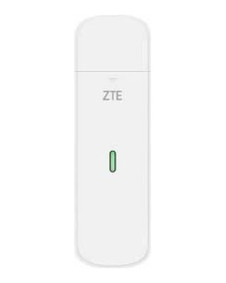
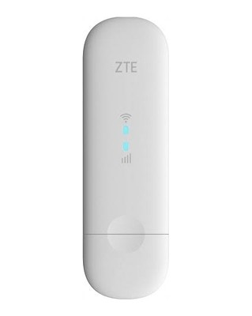
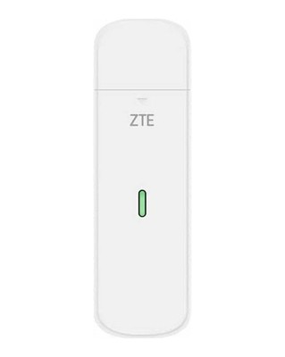
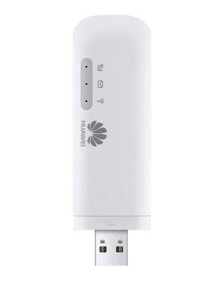
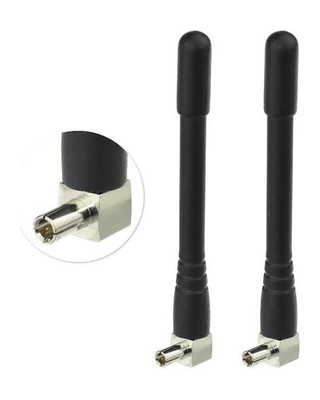
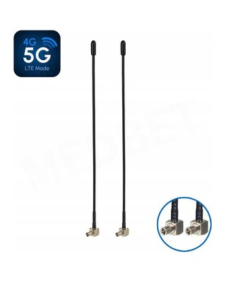
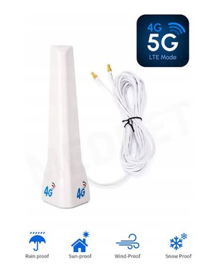

Internet Failover (LTE)
Internet Failover is a built-in feature of Web3 Pi vOS — it ships in every vOS image, disabled by default; no extra software to install.
Your Ethereum node normally runs on Ethernet. With Internet Failover enabled, you plug a USB LTE modem (with a SIM card, PIN disabled) into the Raspberry Pi and the node survives internet outages on its own:
- If the Ethernet cable dies (unplugged, switch failure), the system moves to LTE within seconds.
- If the cable looks fine but the internet behind it is dead (ISP outage — the most common case), a watchdog notices within ~20 seconds and forces traffic onto LTE.
- On every switch, the node's stale connections are closed immediately so Geth and Nimbus start reconnecting over the new path right away. All peer connections are dropped in the process and the clients rebuild them from scratch, which takes a few minutes — the node may briefly stumble on sync or attestations during that window, but on a good LTE link (≥ 20/10 Mbit/s) it recovers full operation on its own within a few to a dozen or so minutes, with no intervention.
- While on LTE the system enters data-saving mode: upload is shaped, automatic system updates are paused, and every megabyte is metered and visible in the control panel.
- When Ethernet is healthy again for 2 minutes straight, traffic moves back automatically and data-saving mode ends. No human action at any point.
- A WiFi network can optionally sit between Ethernet and LTE as a middle fallback (priority: Ethernet → WiFi → LTE).
The validator is never restarted
No failover code path ever touches the validator process. In the worst case the watchdog may restart the beacon service — at most once per outage, as a last resort — but the validator service is never restarted by failover. Ever.
You provide the modem and the SIM; one action in control-panel.sh turns the feature on.
Requirements at a glance
| Requirement | Value |
|---|---|
| Modem class | USB LTE modem that presents itself as a USB network card (cdc_ether) with its own onboard dial/NAT/DHCP — see the recommended list below |
| USB port | USB 3.0 port on the Pi (stability and power, not speed — see below) |
| SIM | Full LTE (not LTE-M / NB-IoT), data plan sized for node traffic, PIN disabled |
| Link quality | At least 20 Mbit/s down / 10 Mbit/s up through the modem — measure with the built-in speed test (control panel → F → 8) |
| Subnets | Every failover link must use a different IP subnet (modem LAN vs your home LAN vs WiFi) |
If the LTE link at your location cannot deliver the 20/10 minimum, no failover algorithm can keep an Ethereum node synced on it — the node will lag on LTE and catch up when the faster link returns. Measure first, then decide.
Choosing a modem
The failover treats the modem as a dumb USB network card: it must enumerate as a
cdc_ether (or rndis_host) device with its own onboard dial, NAT and DHCP. Anything
that needs ModemManager, QMI, MBIM or PPP dialing on the host does not qualify.
Recommended models
| # | Model | Price (PL, 2026) | Notes | |
|---|---|---|---|---|
| 1 |  |
ZTE MF833N | ~109–126 PLN | Bench-tested end-to-end on the shipped image. In production, widely stocked. No external antenna ports. |
| 2 |  |
ZTE MF79N | ~149 PLN | Still in production. 2× TS-9 external antenna ports under the flip-open side caps (most retail listings omit them) — the pick for weaker-signal sites. Occasional mode-switch retries on some units (the system retries automatically). |
| 3 |  |
ZTE MF833U1 | ~109–139 PLN | Sibling variant of the MF833N — same class, no antenna ports. |
| 4 |  |
Huawei E8372h-320 | ~140–160 PLN | Works well (192.168.8.x subnet avoids common LAN collisions), but EOL — buy only genuine stock and check lsusb on arrival (see the avoid list). |
All ZTE models above use the 192.168.0.0/24 subnet on their LAN side by default — read
the distinct subnets requirement below.
Avoid list
| Model | Why |
|---|---|
"Huawei E3372-325" (current retail — actually a Brovi device, USB ID 3566:2001) |
Broken mode-switch on Linux. This is the #1 trap: cheap, sold everywhere, looks like the classic Huawei. Do not buy. If lsusb shows 3566:*, return it. |
| Alcatel/TCL IK41VE1 | Firmware lottery (MBIM vs RNDIS) — you cannot know what you are buying. |
| D-Link DWM-222 (rev A2) | Exposes serial/QMI only — fails the plug-and-play requirement. |
| Netgear Nighthawk / ZTE 5G pucks | Battery-powered hotspots: the battery is a wear item that swells on 24/7 power; far more expensive than the class needs. |
| Sierra Wireless EM/MC modules | MBIM/QMI only, no onboard router mode. |
Quick identification (lsusb)
| ID seen | Meaning | Verdict |
|---|---|---|
19d2:1225 → 19d2:1405 |
ZTE MF79N, MF833N (storage → network mode) | ✅ |
12d1:1f01 → 12d1:14dc / 14db |
Huawei HiLink (E3372h / E8372h) | ✅ |
12d1:* → 12d1:1506 / 1442 |
Huawei Stick/NCM firmware | ❌ |
3566:2001 |
Brovi fake-Huawei | ❌ return it |
2001:ac01 → 2001:7e3d |
D-Link DWM-222 A2 | ❌ |
USB port and placement
Use a USB 3.0 port. This is about connection stability and power delivery, not
throughput (these modems are USB 2.0 devices electrically): on USB 2.0 ports we observed
modems periodically resetting, failing to hold speed, or not enumerating at all
(can't set config, error -110) — all of them ran stably on USB 3.0.
On the Pi 5 the USB 3.0 ports sit next to the Ethernet jack, so a wide modem body can press against the network plug. It fits, but a short USB extension cable removes the squeeze entirely and also guarantees firm seating. One more bench finding: horizontal orientation beats vertical for signal — conveniently, that is the natural position of a stick in the Pi's side ports.
SIM card requirements
- Full LTE, not LTE-M / NB-IoT (an Ethereum node needs real bandwidth). 5G is unnecessary — a failover link cannot use the extra speed.
- Disable the SIM PIN before inserting it (in a phone, or once via the modem's web UI). This is the #1 real-world failure: a PIN-locked SIM enumerates fine, hands out a DHCP address, and moves zero data.
- Pick a different carrier than your home ISP — otherwise one regional outage can take down both links at once.
-
Plan size — bench-measured (Hoodi testnet, node parked on LTE):
- node without a validator: ≈ 0.7 GB/hour ≈ 17 GB/day (short-window measurement on a constrained uplink — treat it as the floor);
- node with one active validator: ≈ 2.9 GB/hour ≈ 69 GB/day, steady across a full 24 h dwell — and roughly half of that is upload: once the uplink is not the bottleneck, the beacon serves data to its ~20 peers. Budget ≈ 80 GB/day after carrier billing overhead.
- each failover switch additionally costs 0.25–0.5 GB of catch-up traffic.
A mainnet node is at least as heavy. Practical advice (Polish market, 2026): for a validator setup a truly unlimited plan (~35 PLN/month) is the only stress-free option — a "150 GB" plan lasts ~2 days of a real outage and a "50 GB" plan under a day (node-only: ~2–3 days). Treat capped plans as short-blip budgets. - Prepaid expiry: prepaid SIMs need a periodic top-up to stay active — put it in your calendar. The failover's periodic health probes conveniently keep the SIM "in use" from the carrier's perspective. - APN: mainstream carrier SIMs configure themselves; some MVNOs need the APN set once in the modem's web UI. - CGNAT is normal: carrier networks block all inbound connections. The node works fine outbound-only — expectations below.
Distinct subnets — a hard requirement
Every failover link must use a different IP subnet. The ZTE modems' LAN defaults to
192.168.0.0/24 — which is also the factory default of many home routers, so collisions
are common.
The watchdog detects a collision and raises an alarm (control-panel status banner +
system journal) instead of switching traffic onto an ambiguous path. If you see the
alarm: change your router's LAN subnet (e.g. to 192.168.1.0/24), or the modem's,
if its web UI allows it.
Setup, step by step
- Prepare the modem: SIM inserted, PIN disabled. If the modem has a WiFi hotspot (MF79N, E8372h are "wingles"), disable the hotspot in its web UI — it is a security exposure, extra heat, and parasitic data on your metered SIM. The failover does not use it.
- Plug the modem into a USB 3.0 port (short extension cable recommended).
- Open the control panel (
control-panel.sh) and pressF— Internet Failover (LTE). The status screen shows the modem (present/absent), SIM PIN state, network registration, signal, and data counters. - Run the speed test (
F→8). It measures through the modem interface, shows RSRP/SNR signal readings, and prints an explicit OK / BELOW MINIMUM verdict against the 20/10 Mbit/s requirement. Judge a site only with this test — a browser speed test on your phone measures a different radio in a different spot. - Enable failover from the same menu. From this moment the feature is armed and fully automatic.
- (Optional) Add a WiFi rung (
F→ WiFi setup): scan, pick a network, enter the password. On dual-band access points prefer 5 GHz (the band-preference option) — clients otherwise latch onto the louder-but-slower 2.4 GHz. Never select the LTE modem's own hotspot as the WiFi rung — that would be a "backup" riding the same SIM.
Judge the site at more than one time of day
LTE capacity swings 2–3× with cell load. The same modem in the same spot measured 21–45 Mbit/s down in the afternoon and 60 Mbit/s in the evening. One measurement is an anecdote, not a verdict — and carrier choice dominates everything else: if a site fails the minimum, a different carrier's SIM usually beats any antenna work.
Weak signal? Escalate in this order
- Reposition the modem (window side of the building can flip the verdict; watch RSRP/SNR in the speed-test readout — aim for RSRP above ~−90 dBm, SNR above ~13 dB). A terrible position doesn't just slow the link down, it wrecks latency (we measured a 7-second ping in one spot).
- External antennas — see below.
- Try another carrier's SIM.
External antennas (TS-9)
Some modems have connectors for external antennas — on this class of device they are almost always TS-9 sockets, usually a pair of them hidden under small side covers (on the MF79N they are under the flip-open caps; retail listings often don't even mention them). TS-9 antennas are cheap (from ~45 PLN a pair) and easy to find in online shops — from small stubby sticks, through mid-size whips on a cable, up to desktop antennas you can place on a windowsill:



With two sockets, connect both antennas (the second one serves MIMO — it is not a
spare). An antenna on a cable also lets you keep the modem at the Pi while the antenna
sits where the signal is. Re-run the speed test (F → 8) after every change and watch
RSRP/SNR — if antennas don't lift the site above the minimum, a different carrier's SIM
usually will.
Verify it works (2 minutes)
Do this once after setup — it is the same scenario the feature exists for:
- Watch the failover status screen (
F) or the panel dashboard. - Pull the Ethernet cable. Within seconds the active link changes to LTE (or WiFi, if provisioned); data-saving mode engages; the node keeps running.
- Wait a few minutes, watching the node: peers drop to zero on the switch, then rebuild over LTE (a handful of peers on CGNAT is normal and sufficient).
- Plug the cable back in. After ~2 minutes of confirmed-healthy Ethernet the system switches back automatically and data-saving mode ends.
Every decision the watchdog makes is logged with its reason:
journalctl -t w3p-failover. Machine-readable live state (which also feeds the panel):
/run/w3p-failover/status.json.
What to expect while on LTE
- Fewer peers — by design of carrier networks. Under CGNAT no inbound connections are possible, so the peer count settles around a dozen–two dozen instead of 150+ (bench: average ~20 over a 24 h LTE dwell). That is normal and sufficient; a validator needs only ~5–6 beacon peers to perform its duties.
- Port-forwarding rule of thumb: opening the beacon's P2P ports on your wired router is worth it (bench: ~10–16 peers with ports closed → ~160 open). On LTE it does nothing — CGNAT blocks inbound regardless.
- Validators: expect at most 1–2 missed attestations per switch and none during a stable dwell on a link meeting the 20/10 minimum. If the watchdog ever escalates (beacon-service restart, at most once per outage), the panel shows it as a brief service-state blip — that is the failover's safety valve doing its job, not a fault. The validator service itself is never touched by the failover. If you keep your validator keys on an encrypted (LUKS) volume with manual start, remember that it never auto-starts after a node reboot — a deliberate security property, unrelated to the failover (which never reboots the node).
- Data-saving mode is automatic: upload shaped (anti-bufferbloat; download is never
policed), automatic system updates paused until the wired link returns, all usage
metered (
F→ data usage; daily/monthly history via vnstat). - Do not start a resync while on LTE. A fresh Geth snap-sync is 60+ GB — if the node needs a resync, wait for the wired link.
Troubleshooting
| Symptom | Cause / fix |
|---|---|
Modem not detected, or can't set config, error -110 in dmesg |
Marginal USB seating or a USB 2.0 port. Re-seat firmly in a USB 3.0 port (short extension cable helps). The system also retries mode-switching and power-cycles the port automatically. |
| Modem detected, DHCP address assigned, no data flows | SIM PIN is enabled (the status screen shows PIN state) — disable it. Or: MVNO SIM needs the APN set once in the modem web UI. |
| Bought an "E3372" and it doesn't work | Check lsusb: 3566:2001 = Brovi fake-Huawei from the avoid list — return it. |
| Subnet collision banner in the panel | Your home LAN uses the same subnet as the modem (typically 192.168.0.0/24). Change the router's LAN subnet, or the modem's if its UI allows. Failover refuses to arm the ambiguous link until resolved. |
| Speed test says BELOW MINIMUM | Escalate: reposition (watch RSRP/SNR) → TS-9 antennas (MF79N) → different carrier. Re-test at different times of day. A single unit can also have a degraded radio — if a second modem is available, compare RSRP at the same spot. |
| Terrible latency on LTE (multi-second pings) | Signal collapse causes bufferbloat. Move the modem first — one bad spot measured 5.9/0.1 Mbit/s with 7.4 s pings. |
attest_risk alarm while on LTE |
The validator is active and the beacon has very few peers on this dwell. Usually transient during peer rebuild; if persistent, the link is too slow — check the speed test. |
| Panel shows a beacon service restart during an outage | The escalation safety valve (at most once per outage). The validator itself is never restarted. |
| WiFi rung connects at 2.4 GHz / slow | Set the 5 GHz band preference in the WiFi setup. Note the Pi's built-in radio tops out at ~200–250 Mbit/s real throughput — plenty for a failover rung. |
| Frequent switching back and forth | The watchdog's flap protection latches onto the best healthy link automatically for 30 minutes, then re-evaluates. Check the wired link's actual health — flapping usually means a dying ISP link, not a failover problem. |
How it works under the hood (short version)
Three layers, all shipped in the vOS image:
- A route-metric ladder (Ethernet 100 > WiFi 300 > LTE 700): pure kernel/networkd configuration. Physical link loss fails over instantly with zero custom code.
- A watchdog daemon (
w3p-failover.service): probes each link (two independent anchors + DNS + gateway), applies hysteresis (demote after 20 s of failure, return after 120 s of health, flap protection), and covers the "cable fine, internet dead" case the ladder cannot see. A chain-liveness veto prevents false demotions while the node is saturating the link to catch up. - The nudge: on every switch, connections pinned to the dead path are closed
(
ss -Kby source address) so Geth and Nimbus redial immediately instead of sitting deaf through kernel TCP timeouts — chain-head tracking typically returns within ~30–100 seconds of a switch.
After every switch the watchdog verifies recovery by liveness (new connections on the new path + beacon head advancing), not by peer counts. If verification fails, it restarts the beacon service — once per outage, never the validator — then alarms.
Details, design rationale and bench history live in the project's engineering notes.